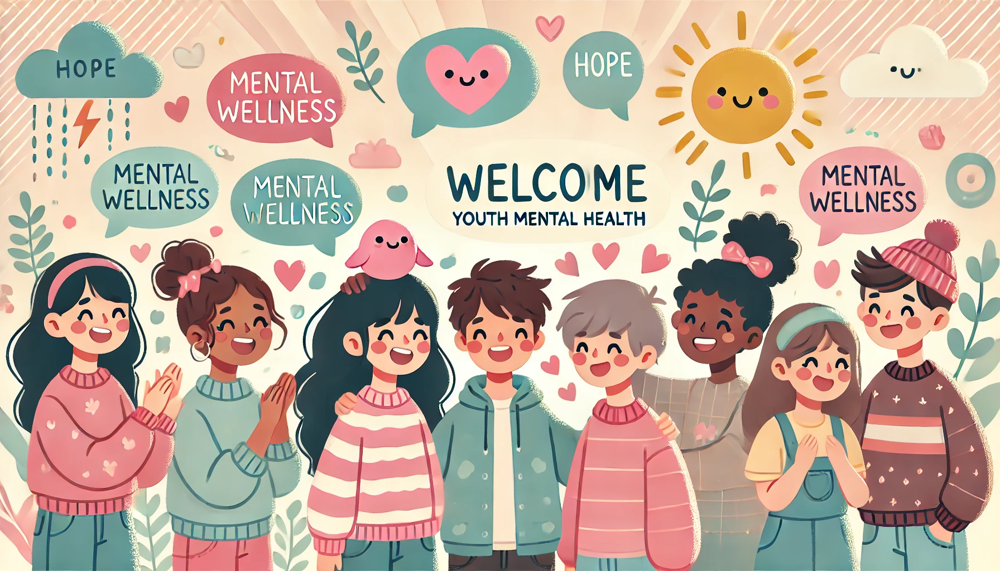
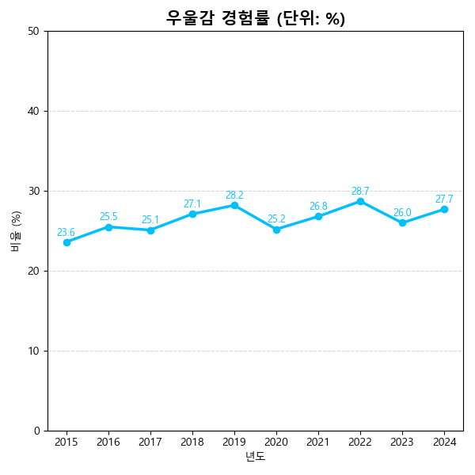

👋 스마트폰과 정신건강

이 웹페이지는 청소년의 스마트폰 사용과 정신건강의 관계를 분석하고,
건강한 디지털 습관을 만들 수 있도록 도와주는 정보들을 제공합니다.
📊 과거의 내 또래 아이들의 우울감은?
👋 청소년 우울감 경험률 그래프

👋
📱 스마트폰 사용량과 정신건강
이 부분에는 그래프 또는 통계 자료가 들어갈 예정입니다.
🧠 정신건강을 지키는 스마트한 습관
- 🌙 자기 전 1시간 스마트폰 끄기
- 🧘 명상 앱 사용해보기 (ex. Calm, 코끼리)
- 🚶 하루 30분 이상 걷기
- 🔌 디지털 디톡스 주간 운영